Start
Install & open
Install the add-on
- In Blender, open Edit › Preferences › Get Extensions.
- Click the small down-arrow in the top-right corner of that page and choose Install from Disk…
- Select arch_builder.zip and click Install from Disk. Don't unzip it first.
You can also drag arch_builder.zip straight onto the Blender window. To update, install the new zip the same way. It replaces the old version.
Open the panel
In the 3D Viewport, press N to show the sidebar and click the ArchBuilder tab. All tools start from here.
Two controls sit at the top of the panel:
- Language (globe icon) switches the whole interface. See Languages.
- Material Preview Shading switches the viewport to Material Preview so you can see textures and glass while you work.
Start
How ArchBuilder works
There are two ways to create things. Interactive tools let you click in the viewport to draw walls, floors, roofs, railings, stairs and colonnades, or to place doors, windows, balconies, pillars and cutouts. One-click buttons create something complete from the current settings, such as a whole building, a roof on a room or a stair at the 3D cursor.
Everything stays editable
Click any object ArchBuilder made and a Selected… panel appears below the main panel, for example Selected Wall Parameters or Selected Roof Parameters. Change a value there and the object rebuilds straight away.
While a tool is running
- A guide in the bottom-left corner of the viewport lists the keys for that tool.
- You can still orbit and zoom with the middle mouse button and the mouse wheel.
- Right-click or Esc cancels. In the drawing tools, right-click also finishes the current shape once you have enough points.
- Ctrl + Z undoes a finished action as usual. Inside the wall, floor, roof and railing tools, Backspace removes the last point you placed.
Start
Your first house in six steps
- In Draw Walls & Facades, set Storeys to 2, then click Draw Wall.
- Click in the viewport to place each corner. Hold Shift to keep walls straight. Finish by clicking the green ring on your first corner. The room closes and gets a floor, plus a slab between the storeys.
- With the wall still selected, go to Selected Wall Parameters › Add Roof to Wall and click + Gable.
- Open Add Doors, choose a Door Type and click + Place Door. Move the mouse over a wall and click to place it.
- Open Add Windows and click + Place Window. Press ↑ to move to the upper floor, then click to place. Repeat for more windows.
- Select the wall and pick an Exterior Wall Finish, such as Red Brick (PBR). Click Material Preview Shading to see it.
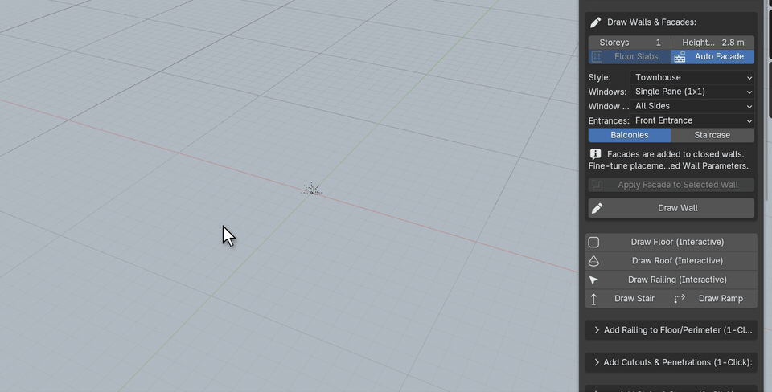
Build
One-click buildings
ArchBuilder › 1-Click Building GeneratorGenerates a complete building with walls, floors, windows, entrances, balconies and a roof. Choose the settings, then click + Generate Building.
Archetype
Apartment Building, Office Block, Skyscraper / High-Rise, Townhouse
Footprint
Rectangle, L-Shaped Wing, Courtyard / U-Shaped, Stepped Tower (chamfered)
Size
Storeys, Width, Depth
Facade
Window Style, window Sides, entrance Doors; Roof, Balconies and Floor Slabs on or off
Roll Variation picks a new random Seed and rebuilds with different windows, doors, finishes and roof layout. Keep rolling until you like one. To come back to a result later, note its seed number.
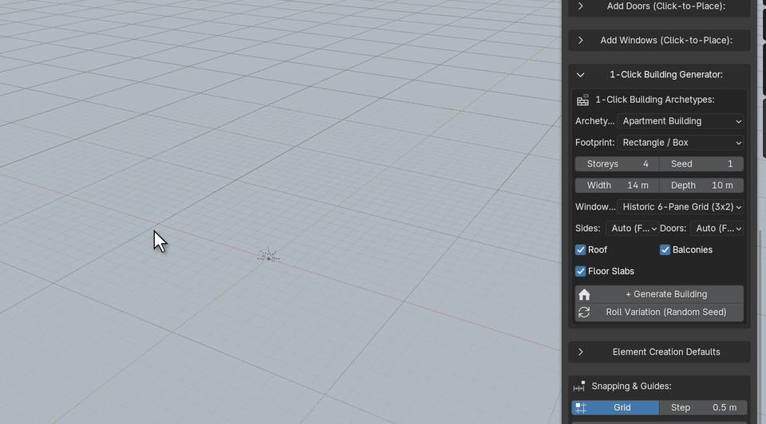
Edit a generated building
Click any part of the building to open Selected Building Attributes. Every setting there updates the whole building:
- Massing & Structure: archetype, footprint, storeys and storey height, width, depth, slabs between storeys and the variation seed.
- Windows & Fenestration: style, which facades get windows, size and sill height, windows per wall or bay spacing, frame and glass.
- Entrance Doors and Balcony Doors: style, size and materials.
- Balconies: layout, pattern, facades, shape, size, railing, support and finishes. Balconies need at least 2 storeys.
- Finishes & Roof: exterior and interior walls, roof style, roof variation (with its own roll button) and roof finish.
The walls of a generated building are managed by the building. Their wall panel only points you back to Selected Building Attributes.
Build
Walls & rooms
ArchBuilder › Draw Walls & Facades › Draw WallWalls are drawn corner by corner. Before you start, set Storeys and Height/Fl (height per floor). With more than one storey, Floor Slabs adds a slab between each floor.
| Key | While drawing walls |
|---|---|
| Click | Place a corner. |
| Click the green ring | Close the room. Closed rooms get a floor and can take a roof. |
| Right-click Enter Space | Finish an open wall that isn't a closed room. |
| ↑ ↓ | Add or remove storeys (also Page Up / Page Down). |
| Shift | Snap to 45° / 90° angles. |
| Ctrl | Snap corners to the grid. |
| P | Turn Auto Facade on or off for this wall. |
| Backspace | Remove the last corner (also Ctrl + Z). |
| Esc | Cancel. |
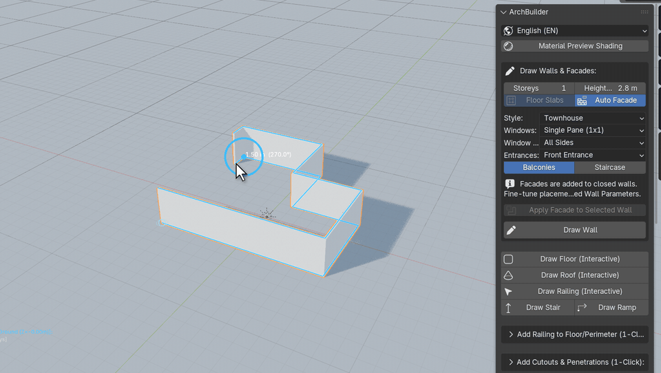
Edit a wall
Select the wall to open Selected Wall Parameters:
- Structure & Room: storeys, storey height, thickness and alignment (centre, interior or exterior side of the line you drew). Ground Floor Slab and Floor Slabs Between Storeys apply to closed rooms. Fit Wall to Roof raises the walls to meet a pitched or arched roof.
- Wall & Room Materials: exterior finish, an optional separate interior finish, the floor finish and texture scales.
- Quick-add buttons: + Gable, + Hip, + Flat, + Arched roofs, and + Door, + Glass Door, + Garage Door, + Window and plain holes.
To move or rotate a whole room, select the wall and use Blender's own G and R. Doors, windows, balconies and roofs you added to it are attached to the wall and move with it.
Build
Auto facades
An auto facade fills a closed room with windows, entrances and, if you want them, balconies and a staircase. It is a quick way to turn a hand-drawn footprint into a building.
- Before drawing: turn on Auto Facade in Draw Walls & Facades and choose the style, window type, which walls get windows, entrances, Balconies and Staircase. The facade is added as soon as you close the room. You can also press P while drawing.
- On an existing wall: select it and click Apply Facade to Selected Wall, or tick Auto Facade (Doors, Windows, Balconies) in its wall panel.
Fine-tune the facade
The wall panel's facade section controls the layout:
- Windows: windows per wall or bay spacing, corner margin, which floors (From Floor to To, where 0 means the top floor), style, size and sill height.
- Entrances: which wall (Wall #), Position Along Wall, door type and size.
- Balconies: count or spacing, pattern, which walls, and the balcony door.
- Materials & Finishes: window frame and glass, door leaf, frame and hardware, balcony slab and railing.
Build
Floors
ArchBuilder › Draw Floor (Interactive)Closed rooms get a floor automatically when Auto Floor for Rooms is on (in Element Creation Defaults). To draw a slab of any shape yourself, such as a terrace or mezzanine, use Draw Floor: click each corner, then click the first corner, right-click or press Enter to finish.
Selected Floor Parameters sets the thickness, elevation offset, material and texture scale.
Build
Roofs
ArchBuilder fits a roof to the room's real outline, including L, T and U shapes, bays and chamfered corners. Wings meet in proper ridges and valleys.
Gable
Pitched, with triangular end walls.
Hip
Pitched on every side, with no end walls.
Flat
Flat slab with an optional parapet.
Arched
Barrel vault. Crossing wings form groin vaults.
Add a roof
- On a room: select a closed wall, then click + Gable, + Hip, + Flat or + Arched in its wall panel. Or use Add Roof to Room in the main panel with a Roof Type.
- Any outline: Draw Roof (Interactive). Click each corner, then click the first corner, right-click or press Enter to finish. Shift snaps angles, Ctrl snaps to the grid and Backspace removes the last corner.
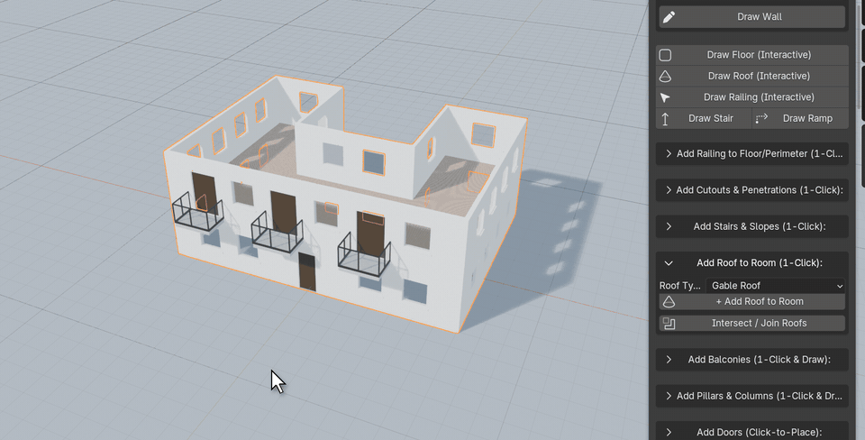
Edit a roof
Selected Roof Parameters gives you the style, thickness, eaves overhang, elevation offset and finish, plus:
- Pitched roofs: ridge height and main ridge axis. Roof Variation and its roll button change which wing carries the main ridge and how wing ends finish (gable, hip or clipped gable). You can also turn the front and back gable walls on or off, or fill the gables with wall.
- Flat roofs: parapet height and thickness.
- Arched roofs: rise, smoothness (subdivisions) and span axis.
To merge two overlapping roofs into one, select both and click Intersect / Join Selected Roofs.
Add detail
Doors & windows
ArchBuilder › Add Doors / Add WindowsPick a type, click the place button, then move the mouse over a wall. The opening slides along the wall under your cursor. Click to place it. The hole is cut cleanly and the frame, glass and sill are added.
Door types
Single swing, double French, glass door, sectional garage door, or a plain door opening
Window types
Glazed window, or a plain window opening
| Key | While placing |
|---|---|
| ↑ ↓ | Choose the floor on a multi-storey wall. |
| A | Go back to picking the floor from where the mouse is. |
| F | Flip which side faces out. |
| Click | Place. |
| Right-click Esc | Cancel. |
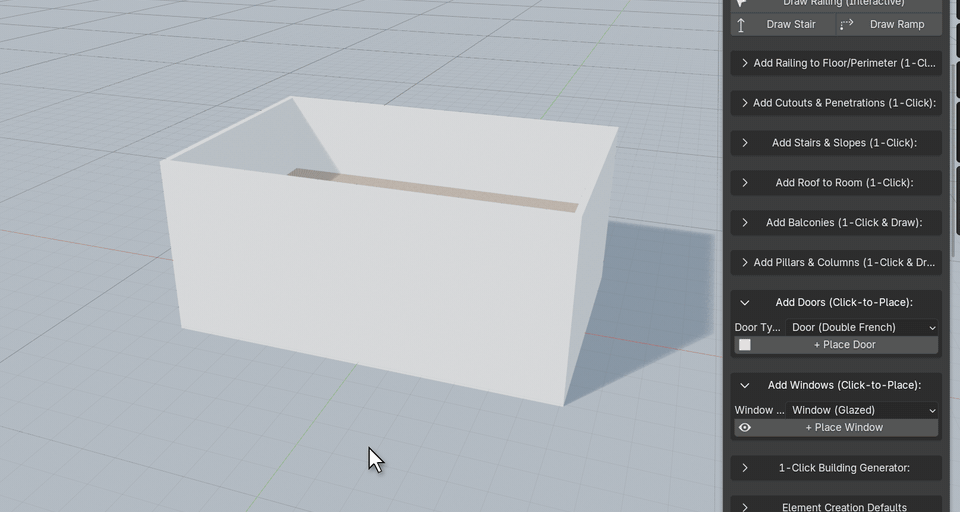
Edit a door or window
Select it to open Selected Opening Parameters:
- Style: Full Fixture, Frame Only, or Hole Only if you want to use your own assets.
- Size: width, height, and sill height (windows) or threshold height (doors).
- Wall Placement: Segment # chooses which straight section of the wall it sits in, and Position (0-1) slides it along that section. Flip Facing turns it round.
- Frame & Components: frame thickness, window panes across and down, outer sill, door leaf thickness and Door Open Angle. Garage doors add the lift amount, panel count and style, window inserts, tracks and handle.
- Materials: frame, door leaf, glass (clear or frosted) and handle.
New doors and windows take their default sizes from Element Creation Defaults.
Add detail
Balconies
ArchBuilder › Add BalconiesClick + Place Balcony and move the mouse over a wall or a building corner. The balcony attaches to the outside of the wall with its slab, railing and supports. Click to place it.
| Key | While placing |
|---|---|
| 1 2 3 4 | Rectangular, curved bow, chamfered, or wrap-around corner. |
| ↑ ↓ / A | Choose the floor / go back to picking it from the mouse. |
| F | Flip between the outside and inside of the wall. |
Draw Custom Balcony lets you size the balcony yourself: click on the wall to set its centre, then move the mouse to set width and depth and click again.
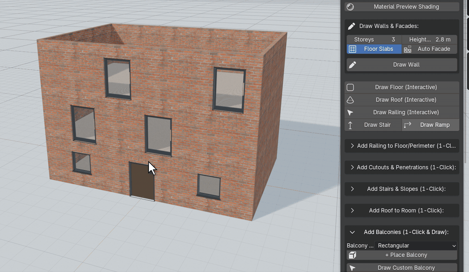
Edit a balcony
- Shape: width, depth, corner radius, elevation and slab thickness. Corner balconies have a width for each wall, the corner angle and the corner style (curved, sharp or chamfered).
- Guardrails: on or off, with style (glass, pickets, cable, pipe or solid parapet), height and spacing.
- Supports: none (cantilevered), brackets, ground columns or tie-rods, with their sizes.
- Finishes: slab, railing frame, infill and supports.
Add detail
Stairs & ramps
Draw Stair and Draw Ramp take two clicks: the first sets the bottom, the second sets the top landing. While you move the mouse, the guide shows the run, rise, step count and the size of each step. Shift keeps the stair straight and Ctrl snaps to the grid.
To place a ready-made stair instead, open Add Stairs & Slopes, choose a Stair Type and click + Add Stair / Slope. It appears at the 3D cursor.
Types
Straight, L-shaped with landing, spiral, zigzag (multi-storey) and slope / ramp
Structure
Solid block, sawtooth, open floating treads, or stringer beams
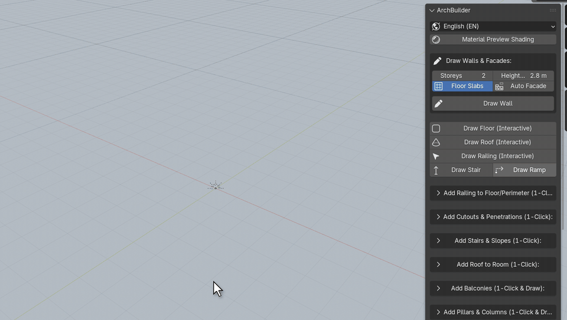
Edit a stair
- Size by step or by flight: set the riser and tread and let the flight grow, or set the total rise and run and let ArchBuilder work out even steps.
- Per type: turn direction and flight lengths (L-shaped), radii, turn angle and centre column (spiral), storeys, steps per flight, stairwell gap and landing depth (zigzag), and side curbs (ramp).
- Guardrails: left and right rails, height and style (post & rail, glass guard or solid wall).
- Finish: stair material, texture scale and a separate railing material.
Add detail
Railings
- Around a floor: select a floor slab, open Add Railing to Floor/Perimeter, pick a Railing Style and click + Add Railing. The railing follows the slab's edge. With nothing selected, a railing is added at the 3D cursor.
- Any path: Draw Railing (Interactive). Click to place each post or corner. Right-click or Enter finishes an open run, and clicking the first post closes a loop.
Styles
Posts & balusters (pickets), glass balustrade, cable / wire, industrial pipe, solid parapet
Selected Railing / Balustrade Parameters controls the style, closed loop, height, post spacing, size and profile, handrail size and profile, picket spacing, glass thickness and top cap, cable count and diameter, parapet thickness, and materials.
Add detail
Pillars & colonnades
ArchBuilder › Add Pillars & Columns- + Place Pillar places one column where you click on a floor or the ground. Press 1–6 to change the style. B toggles the base and C toggles the capital.
- Draw Pillar / Colonnade Array: click to set the start, move the mouse to stretch out a row of columns, and click to finish. Press + / − to add or remove columns, 1–5 to change the style, and B to add a beam across the top.
Column styles
1 Square · 2 Round (Tuscan) · 3 Fluted (Doric) · 4 Octagonal · 5 Steel I-beam · 6 Craftsman porch pier
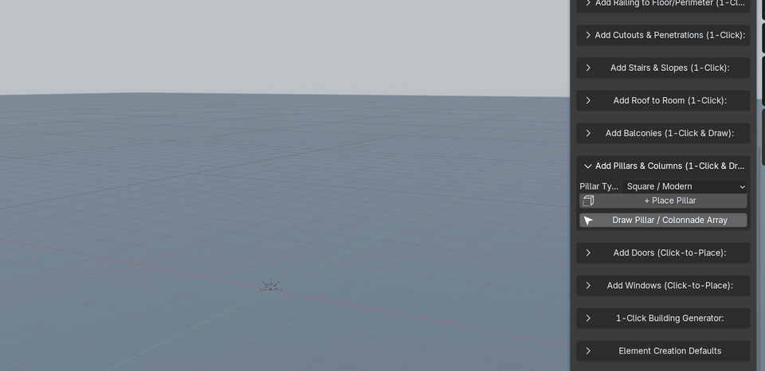
Selected Pillar / Colonnade Parameters covers the style, height, width, bevel, taper and flute count, the base (style, height, width), the capital (style, height, width), column count and beam for colonnades, and the material.
Add detail
Cutouts
ArchBuilder › Add Cutouts & PenetrationsCut openings through walls, floors, roofs or any mesh. Choose a Cut Shape, click + Place Cutout, move the mouse over the surface and click.
Shapes
Rectangle, circle, straight slot, triangle, and a stairwell shaft sized for stair headroom
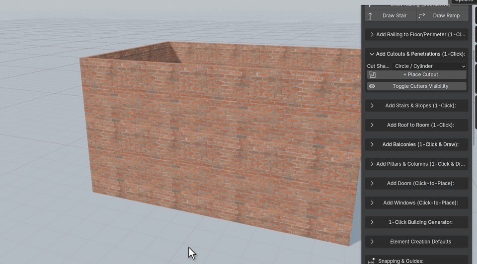
Each cut is a wireframe cutter object. Move it with G and the opening follows. Selected Cut / Aperture Parameters sets its size and whether it cuts all the way through or only to a set depth (a pocket).
- Apply & Finalize (Bake to Mesh) makes the cut permanent and removes the cutter. Do this before exporting to a game engine.
- Delete Cut (Restore Surface) removes the cut and fills the surface back in.
- Toggle Cutters Visibility hides or shows all cutter wireframes.
Finish
Materials
Everything ArchBuilder makes comes with materials that work in EEVEE and Cycles. Pick finishes from the Selected panel of each object. Most have a Texture Scale slider to size bricks, planks or tiles.
Walls
Plasters, red and grey brick, concrete, stucco, cedar planks and peeling timber (PBR versions included)
Floors
Oak and walnut planks, ceramic and marble tiles, polished concrete, terracotta and brick pavers
Roofs
Terracotta and clay tiles, slate, standing-seam and box-profile metal, shingles, concrete
Fixtures
Painted, powder-coated, anodised and steel frames, oak and walnut, clear or frosted glass, brass, black or chrome hardware
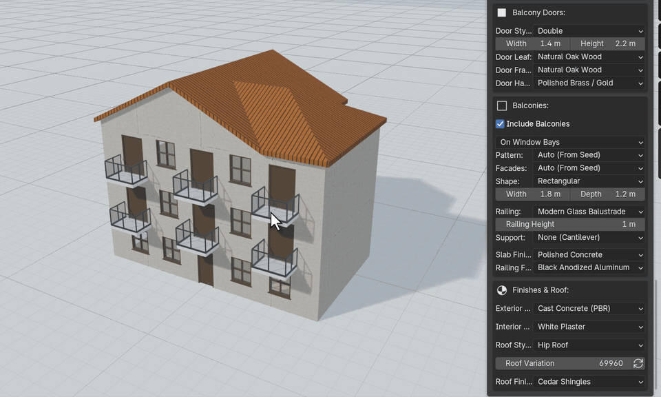
Materials are ordinary Blender node materials. You can open them in the Shader Editor, change them or replace them with your own.
Finish
Defaults & snapping
Element Creation Defaults
These set the sizes new objects start with. Changing them doesn't affect objects you have already made. Use Category to show one group at a time:
- Walls: height, thickness, alignment, and Auto Floor for Rooms.
- Doors & windows: width, height, and threshold or sill height.
- Stairs & slopes: flight width, riser, tread, structure and railings.
- Floors (thickness, offset), Roofs (thickness, overhang, pitch, arch rise, parapet) and Railings (style, height, spacing, cables, glass).
Snapping & Guides
Grid snaps points to a grid of the chosen Step. It is on by default, at 0.5 m. Angle Snap rounds wall directions to the chosen angle step (45° by default) and is off by default. Hold Ctrl or Shift while drawing to snap to the grid or to angles even when these are switched off.
Finish
Languages
Use the globe menu at the top of the panel to switch between English, Deutsch, Français, Español, 日本語 and 简体中文. The change applies immediately, including the on-screen guides, without restarting Blender.
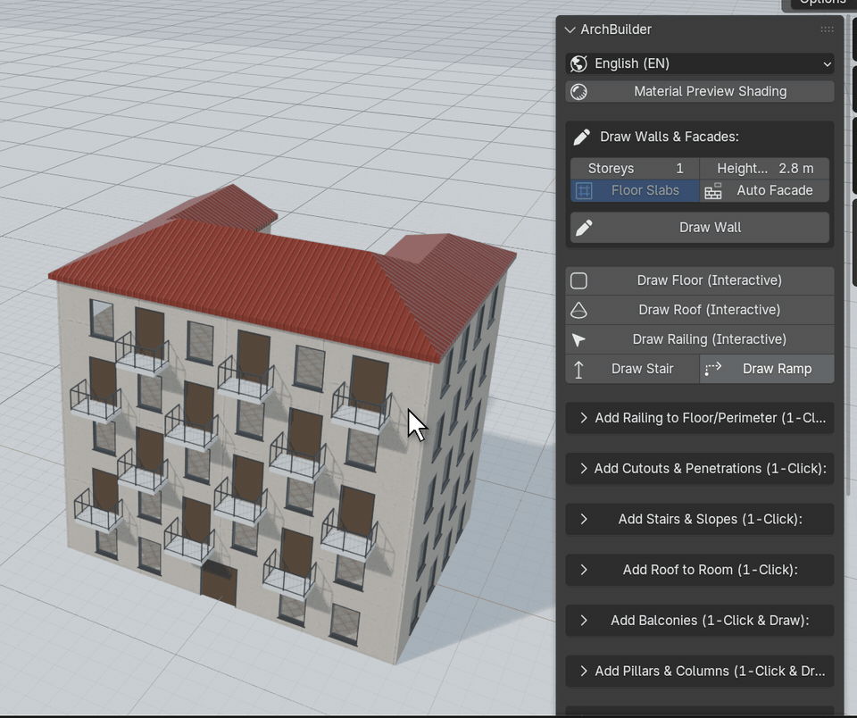
Reference
Keyboard shortcuts
These keys only work while the tool is running. Right-click or Esc cancels any tool.
Draw Wall
| Click | Corner. Click the green ring to close |
| Enter | Finish an open wall |
| ↑ ↓ | Storeys |
| P | Auto Facade on / off |
| Shift / Ctrl | Angle snap / grid snap |
| Backspace | Remove last corner |
Draw Floor, Roof, Railing
| Click | Corner or post |
| Enter | Finish (or click the first point) |
| Shift / Ctrl | Angle snap / grid snap |
| Backspace | Remove last point |
Doors & windows
| ↑ ↓ | Choose floor |
| A | Floor from mouse position |
| F | Flip facing |
| Click | Place |
Place Balcony
| 1–4 | Rectangular, curved, chamfered, corner |
| ↑ ↓ / A | Choose floor / from mouse |
| F | Flip outside / inside |
Place Pillar
| 1–6 | Square, round, fluted, octagonal, I-beam, Craftsman |
| B | Base on / off |
| C | Capital on / off |
Draw Colonnade
| + − | More / fewer columns |
| 1–5 | Column style |
| B | Beam on / off |
Draw Stair / Ramp
| Click ×2 | Bottom, then top |
| Shift / Ctrl | Straight / grid snap |
Reference
Troubleshooting
I can't find the ArchBuilder tab
Press N with the mouse over the 3D Viewport. If the tab still isn't there, check that ArchBuilder is enabled in Edit › Preferences › Add-ons, and that you are on Blender 4.2 or newer.
Textures look flat or grey
The viewport is in Solid mode. Click Material Preview Shading at the top of the panel, or switch to Rendered.
“Please select an ArchBuilder Wall first”
Roof buttons need a wall to be selected. Click the room's wall and try again. The wall must enclose at least three corners.
My wall panel says “Managed by 1-Click Building”
That wall belongs to a generated building. Change it in Selected Building Attributes, which you get by clicking any part of the building.
The generator removed my building
+ Generate Building replaces the generated building in the scene. Press Ctrl + Z to get it back. To keep several buildings, see One-click buildings.
My Edit Mode changes disappeared
ArchBuilder rebuilds objects from their settings, which replaces manual edits. Make changes in the Selected panel instead. For hand modelling, finish the ArchBuilder part first and then work on a copy.
Exporting to Unreal, Unity or Godot
Apply every cutout with Apply & Finalize first, so the openings become real geometry and the cutter objects are removed.
Balconies don't appear on a generated building
Balconies need at least 2 storeys, and Include Balconies must be ticked in Selected Building Attributes.